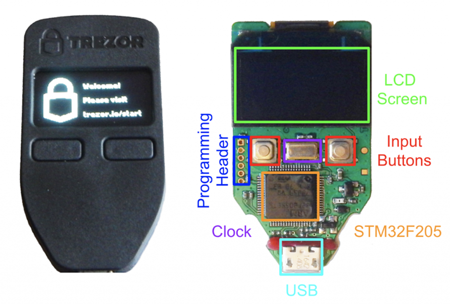

.png)
The Hardware Wallet
Dissected (Part 1 - Connecting Parts)
In-Depth Explanation
Note: The paragraph mode for this article will not be available as it's undergoing updates important for optimal learning. Updates regarding this fix will come out soon via communication platforms.
So far, it’s become evident that various elements of blockchain technology are mostly involved in finance, and how newer developments with the way we interact with the money we make and spend will constantly develop at a faster rate, higher than of which we can process. But, of course, this can not all be possible without technology, hence today we’ll be discussing one of the core reasons as to why daily transactions exist today, which is the hardware wallet.
Mentioned in the past, the hardware wallet is like any other wallet, at which it can be split between being a cold and hot type so to speak. By simple definition, this can essential mean that a wallet of this kind can connect to the blockchain either online (via hot wallet) or offline (via cold wallet), but what becomes a mystery for us is what happens within the wallet.
You might sometimes be using a computer, and wondering, what goes on behind it, what sort of processes may potentially lead to you doing the activities you wish to do, such as schoolwork or general workplace-related things. Since general concerns relating to blockchain technology usually involve security for the most part, in this workshop series I’ll be going over the parts that make up of a hardware wallet in general.
Since the overall explanation of this is generally complex, there will be multiple parts to this series throughout the year, in order to be able to help you carefully understand the ongoing processes behind this device. Without further a-do, to get started, I will first explain that like a smartphone for example, the hardware wallet generally consists of the same parts. For example, you have an LCD screen, input buttons, a programming header, a clock, a USB port, and a particular chip similar to that of a processor called the STM32F205.
Since it’s difficult to explain this without a basic diagram, I will be including diagrams while carefully explaining what each function does. The LCD screen for the most part is like a normal LED screen in some cases, yet it’s specified for smaller devices, at which it stands for a liquid-crystal display. It’s not to be confused to be a an LED by definition, which stands for light-emitting diode. For the instance of an LCD screen, there is no light that is directly emitting at you, yet instead, it’s an optical panel that uses a color scheme to essentially produce images. It’s a very raw form of projecting images on display, though, it is a complex part of systems that still exists today and will require complex explanations if it were to be researched into.

Regardless, this is what display all of your information, or so to speak, the general procedures of the device itself without any kind of disruption. Of course, not all hardware wallets have an LCD screen, but to give an optimal resemblance to the technology we will simply generalize the upmost modernized version of such a device.
Next, we have STM32F205/215 microcontroller, a specific type of equipment that is used throughout all sorts of medical, industrial, and consumer applications. A microcontroller, by definition, is simply a specific part of a device meant to control and serve a certain function of a device. In this case, it's meant to help with power consumption of the device itself, it is the most essential part of managing memory when responding to the processing unit of a device, which is essentially split it into two types of memory storage. You have your program memory, as well as your data memory. The core difference between these types of memory is more so that program-based memory is more or less meant to distribute bits of data instructions to the CPU regarding how information must be maintained over a period of time without any significant amounts of power required. In the other hand, data memory is more so meant to hold temporary data instructions to the devices CPU while a more permanent power source is attached.
As mentioned before, it is essentially considered like the memory management behind a laptop for example, except the sourced power so to speak is based on the distribution of instructed data to the general functionality of a CPU. Keep in mind that, the microcontroller is spread throughout both the CPU and memory functions so to speak, it takes care of singular functions, yet, either function does more so connect to each other, it is the essence of how power is sourced to make each part of the device function harmonically.
Since all computational devices, especially hardware wallets, have an input and an output, I will go into the core function of the USB. USBs, are the most popular and by far used accessory of any technological device, and in this case, we’re discussing the USB On-The-Go (OTG) aspect of the hardware wallet. This is as simple as you’d assume, an input that allows an exchange of data between two different devices so to speak, and it can be applied depending on the general compatibility of the device you’re connecting.
When a specific piece of data is identified by a networked device that’s either online or offline, the process of converting it to something recognizable by a separate device, through a USB is essential towards executing certain functions needed for day-to-day uses. In this case, it could be digital conversions for example, hence why I’ll be explaining the implementation of input signals for digital to analog converters. You’re probably thinking, why would a hardware wallet need to uphold data conversions for the sake of displaying audio? To simply put, it’s not audio itself that’s being compiled so to speak, but a wave of signals, in order to take numerical data and transfer it to a digital state at which it can be processed visually through the LCD screen.
It’s like playing a video game, the monitor connected to the PC so to speak, is able to display millions of pixels through an HDMI converter so to speak, that takes the GPU of the PC and more or less convert its signals to a digital form. Generally speaking, this is essential for more or less hardware wallets with screens of themselves such as the Trezor model, but, other devices might not necessarily need it.
So far, we’ve discussed the screen display, the USB inputs, and the general individual processes that make up of the hardware wallets. The next part of this series will more so have a deep dive into the hashing aspect of the hardware wallet, especially with how it becomes compatible with the general processes of investing.